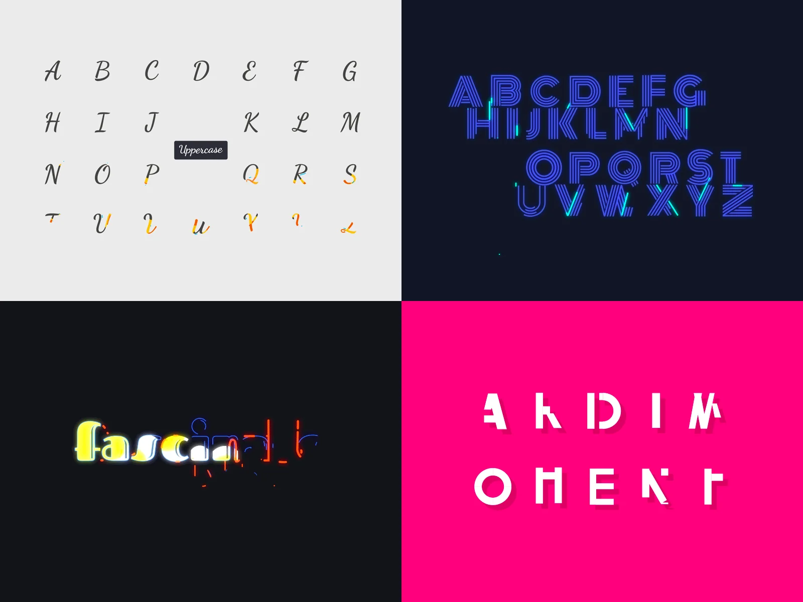
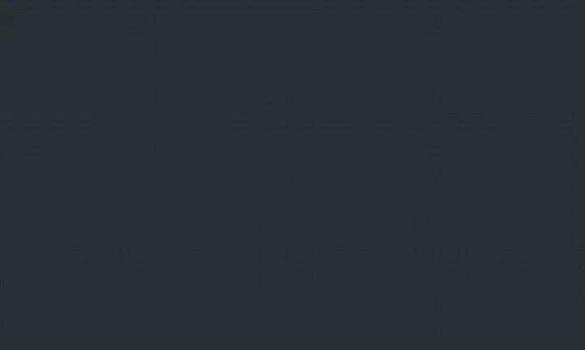
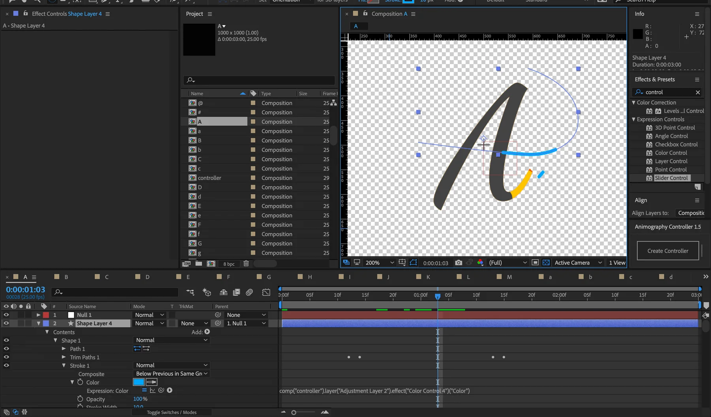
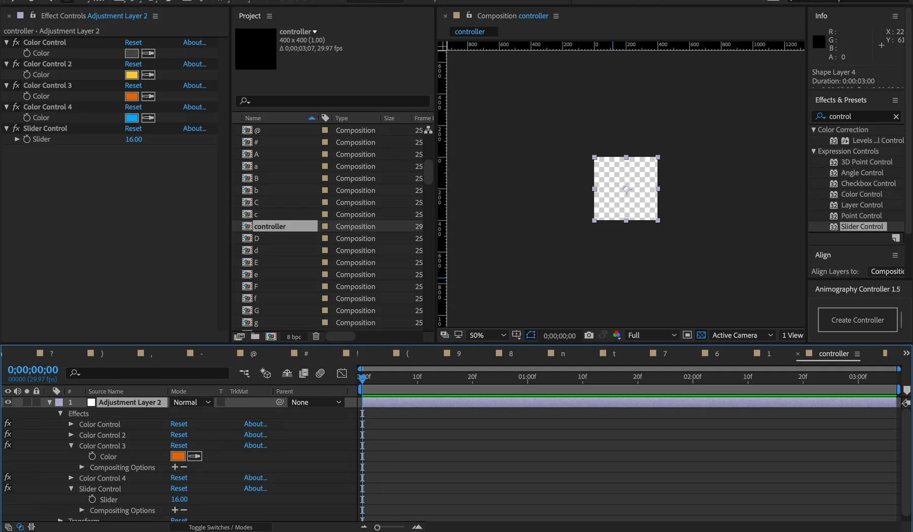
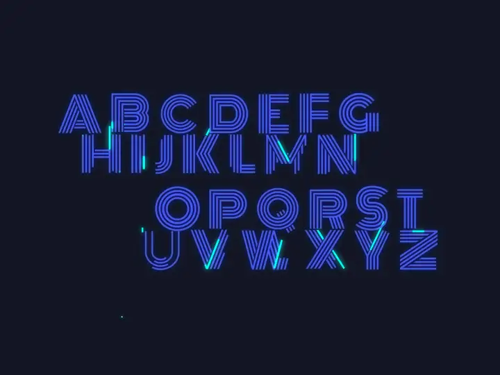
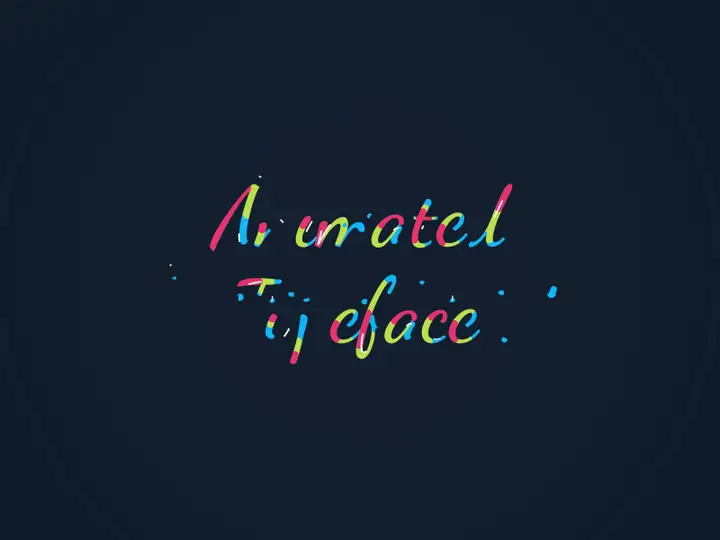
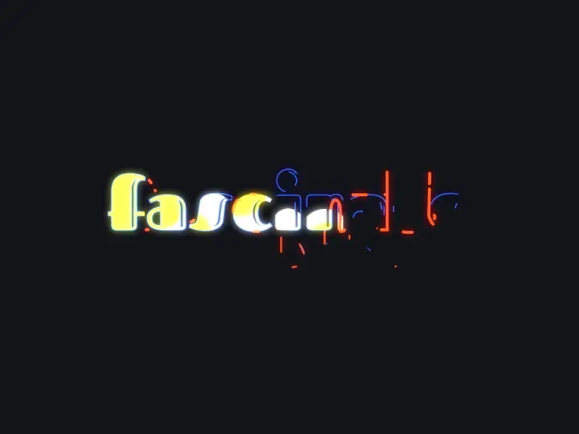
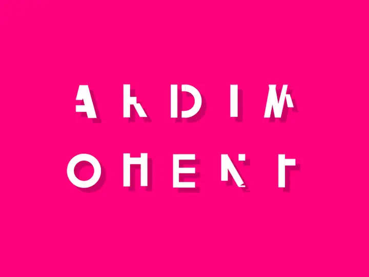

In 2018 I animated typefaces for Type Art, a typography app, as a freelance motion designer. Each brief was a font. Each delivery was every character of that font in motion, built in After Effects from a single controller so colour, stroke and speed could be changed in one place and every letter would follow.

Every job started with the typeface, not the animation. Serif or sans, loops or no loops, swashes, stroke contrast: each of those decides which kinds of motion the letters can carry. A script face wants to be drawn, a geometric face wants to be assembled, an inline face wants light running through it.
From that read I would build several candidate animations on the capital A alone and send them over. The client picked one. Nothing else was animated until they had.

Once a direction was agreed I applied it to every uppercase, lowercase and special character the brief asked for. Each glyph is its own composition in After Effects, so it can be exported on its own and dropped into the app.
The part that made this workable at alphabet scale was a controller composition: a handful of colour controls and a speed slider, referenced by expression from every layer in every letter. Change the palette or the timing once and the whole typeface updates. It is the same idea I would later apply to design tokens in code: decide the variables first, then let every instance inherit the change.


The client needed to see the whole set move before signing off, so every typeface shipped with a demo loop running through its characters, and sometimes a short promo video for the app. Four of those loops are below, playing as they were delivered.




This was repetitive work made interesting by systems thinking. Twenty-six letters twice over plus punctuation is not something to hand-animate, and the controller turned it from a marathon into a method. Most of what I now do with motion in code, easing curves as shared constants and durations as tokens, started with that After Effects slider.